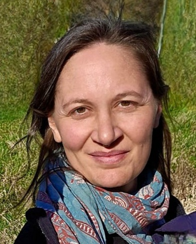

Verena Eichner (*1981)
Studium in Sozialpädagogik / Bildungs- und Erziehungswissenschaften
Reiki Grad I – Shoden – Öffnung des Reiki-Kanals
Ausbildung zur ganzheitlichen Gesundheitsberatung im Einklang mit Yoga & Ayurveda
In Freiburg im Breisgau geboren und im schönen Oberglottertal aufgewachsen, verband ich mich früh sehr tief mit der Natur des Schwarzwaldes und den energetischen Gegebenheiten in meiner Umgebung.
Ich habe meinen Lebensweg auf die Begleitung von Menschen in ihrem Wachstumsprozess ausgerichtet, dabei die Weisheit von Ayurveda und Yoga integriert.